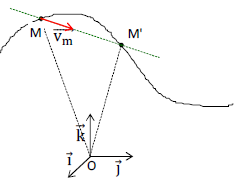
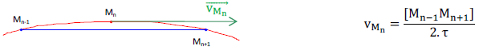
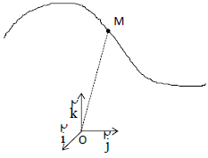

I- Rappels
1°) Du vocabulaire de base
- Le système est l’objet, ou l’ensemble des objets, auquel on s’intéresse pour l’étude de son mouvement.
Ex. : une pierre, une planète, une galaxie, une bille, un électron, etc.
- La trajectoire d’un système dans un repère est l’ensemble des points qu’il a successivement occupé, au cours
de son mouvement. (Rq. : Pour des raisons de commodité, un seul point du système est étudié : son centre de
gravité G)
- Le référentiel est indispensable pour décrire un mouvement dans un univers à 4 dimensions ; il faut donc :
- Un référentiel d’espace, c’est-à-dire un solide servant de référence, auquel on lie toujours un repère
d’espace (un système d’axes), généralement orthonormé (O ; →i, →j, →k ⃗).
Rq. : Le référentiel le plus utilisé sera le référentiel terrestre.
- Un référentiel temporel, pour dater les positions du système étudié.
2°) Des grandeurs physiques usuelles
a) La vitesse moyenne
1- Définition
La vitesse moyenne →vm entre M et M’ est définie par : →vm = (→MM')/(t'-t)
Rq. : - les vecteurs →vm et →MM' sont colinéaires.
- la distance prise en compte est la distance →|MM'| et non pas MM’ .

2- Cas d’un tracé de mobile autoporteur
Notons τ la durée s’écoulant entre deux marquages

b) La notion de force
1- Définition ,
Une force est la modélisation mathématique d’une action exercée (par contact ou à distance) par un
système sur un autre.
2- Les effets d’une force sur le mouvement
Une force s’exerçant sur un système peut :
- contribuer à le maintenir en équilibre (au repos) ;
- le mettre en mouvement ;
- si celui-ci est en mouvement, en modifier la vitesse (direction, sens, valeur) et / ou la trajectoire.
3- Notion de système isolé ou pseudo-isolé
- Un système est qualifié d’isolé lorsqu’il ne subit aucune force de son environnement.
- Un système est qualifié de pseudo-isolé lorsqu’il subit des forces de son environnement, mais que
celles-ci se compensent : Σ→Fext = →0
3°) Des lois de Newton incontournables
Isaac Newton (1643 – 1727) était un philosophe, mathématicien et physicien britannique.
a) La première loi de Newton : le principe d’inertie
1- Énoncé
Dans un référentiel galiléen, le centre d’inertie G d’un solide isolé ou pseudo-isolé peut :
- soit être animé d’un mouvement rectiligne et uniforme ;
- soit conserver son état de repos.
2- Les référentiels galiléens
Un référentiel galiléen est un référentiel dans lequel le principe d’inertie s’applique.
Exemples :
- Le référentiel héliocentrique, auquel est associé le repère héliocentrique dont l’origine est le Soleil et
les trois vecteurs unitaires →i, →j et →k dirigés vers trois étoiles lointaines semblant immobiles.
- Tous les référentiels en mouvement de translation rectiligne et uniforme par rapport à un
référentiel galiléen.
b) Une approche de la deuxième loi de Newton
D’après le principe d’inertie, un système n’étant ni au repos, ni en mouvement rectiligne et uniforme dans
un référentiel galiléen n’est alors ni isolé ni pseudo-isolé.
Si le système n’est ni au repos, ni en mouvement rectiligne et uniforme, nous avons : →v ≠ Cte soit Δ→v ≠ →0
Si le système n’est ni isolé ni pseudo-isolé, nous avons : Σ →Fext ≠ →0
c) La troisième loi de Newton : le principe des actions réciproques
Lorsque deux solides S1 et S2 interagissent, la force exercée par S1 sur S2 est opposée à celle exercée par S2
sur S1 : →F(1→2) = −→F(2→1)
Rq. : Ce principe est valable pour des actions à distance comme des actions de contact quel que soit l’état
de mouvement ou de repos d’un système par rapport à l’autre.
- Un livre posé sur le sol terrestre : →F(Terre→Livre) = −→F(Livre→Terre)
- La Terre en interaction avec le Soleil : →F(Terre→Soleil) = −→F(Soleil→Terre)
II- Les trois grandeurs physiques élémentaires en cinématique
1°) Le vecteur position
Connaissant la position d’un point M de la trajectoire à une date t donnée
par rapport à un repère orthonormé (O ; →i, →j, →k), le vecteur position
→OM est défini par :
→OM = x(t).→i+ y(t).→j+ z(t).→k
où x(t), y(t) et z(t) sont les coordonnées cartésiennes du point M

2°) Le vecteur vitesse
a) Dans un repère cartésien
1- Définition